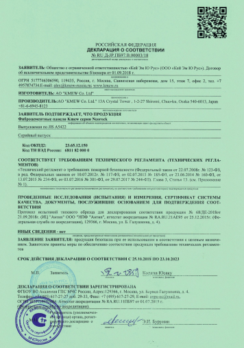

Все особенности нашей продукции подтверждены экспериментальным путем.
Хотите в этом убедиться? Легко! Выбирайте любую характеристику.
САМООЧИСТКА
01
Разрушение
грязи
Грязь разрушается под воздействием ультрафиолетовых лучей (фотокатализаторами) и
затем легко смывается дождем.
02
Экперимент по разрушению
и смыванию грязи
Условия:
Метилен синий (грязь), на который воздействуют ультрафиолетовой лампой.
03
Механизм разрушения
и смывания грязи
Условия:
Метилен синий (грязь), на который воздействуют ультрафиолетовой лампой.
ВЛАГОСТОЙКОСТЬ
01
Избавление от точки росы
в массиве стены
Вентилируемый фасад является надёжным экраном защиты от атмосферных осадков
02
Нагреваемость
При попадании солнечных лучей обычный фасад нагревается. Вентилируемый фасад
нагревается в зависимости от интенсивности потока воздуха в воздушной прослойке.
03
Механизм разрушения
и смывания грязи
Условия:
Метилен синий (грязь), на который воздействуют ультрафиолетовой лампой.
МОРОЗОСТОЙКОСТЬ
Фасадные панели NICHIA отлично подходят для непредсказуемой русской зимы. В холодный период, наибольшую
опасность для фасадов домов представляет вовсе не морозный воздух, а влажность, так как через микротрещины в
стены попадают частички воды.
При замерзании объем жидкости увеличивается и это приводит к повреждению облицовочного материала.
Компания NICHIA учла этот немаловажный фактор, разрабатывая материал своих облицовочных панелей.
В зависимости от технологии производства и внутренней структуры материала, панели NICHIA
подразделяются на 2 серии:
01
Серия «Серадир»
В процессе производства в технологическую массу добавляются полипропиленовые
шарики, которые под воздействием температур разрушаются и оставляют после себя пузырьки воздуха. Это
приводит к облегчению веса материала, а также к улучшению показателей по морозостойкости. Эти
пузырьки во время замерзания воды, попавшей через микротрещины, принимают ее увеличившийся объем и
предотвращают разрушение материала.
02
Серия «Неорок»
Примесь в виде эластичных микрогранул не только облегчает материал, но и
предохраняет его от разрушения при замерзании влаги, попадающей в микротрещины. Сила давления
замерзающей воды приходится не на стены материала, а на эластичные микрогранулы, поддающиеся сжатию.
НЕГОРЮЧЕСТЬ
Все панели NICHIA на 95% состоят из цемента и прозрачного кварца.
Именно эта составляющая наделяет панели NICHIA высочайшим уровнем пожаробезопасности. По итогам пожарных
испытаний панели NICHIA классифицируются по группе горючести как «Негорючий строительный материал (НГ)».
7 сентября 2009 г. на полигоне ЦНИИСК им. Кучеренко в г. Златоуст были проведены огневые испытания навесной
алюминиевой фасадной системы U-Kon с облицовкой из панелей NICHIA разной толщины (14 и 16 мм) и структур
(Неорок и Серадиир). Также были испытаны два способа крепления панелей: открытый с применением заклепок и
скрытый с применением специальных скоб (кляммеров). Все испытанные фасадные панели NICHIA и способы их
крепления получили наилучший класс пожарной опасности "К0" по ГОСТ 31251-2003 и могут применяться без
ограничений на всех типах зданий.
01
Огневые испытания системы U-Kon
c облицовкой из панелей NICHIA
02
Сертификат НГ
и класс от КМО

Проверьте сами!
Запишитесь на краш-тест фибросайдинга, ломайте, жгите, обливайте водой - количество и
качество тестов ограничено только вашей фантазией
Керамический слой блокирует ультрафиолетовые лучи и надежно защищает цветовое покрытие.
01
Фотокерамическая панель (неорганическая покраска)
Так как энергия химических соединений фотокерамического слоя больше, чем энергия
воздействия ультрафиолетовых лучей, соединения не только не разрушаются, но также не пропускают
ультрафиолетовые лучи.
Благодаря неорганическим свойствам, керамическому ™ покрытию не может быть нанесен никакой вред.
Цветовой слой надежно защищен от разрушительного воздействия ультрафиолета.
02
Фотокерамическая панель (неорганическая покраска)
Так как энергия химических соединений фотокерамического слоя больше, чем энергия
воздействия ультрафиолетовых лучей, соединения не только не разрушаются, но также не пропускают
ультрафиолетовые лучи.
Благодаря неорганическим свойствам, керамическому ™ покрытию не может быть нанесен никакой вред.
Цветовой слой надежно защищен от разрушительного воздействия ультрафиолета.
ЗВУКОИЗОЛЯЦИЯ
Высокая звукоизоляция – 40 dB
Несмотря на то, что панели KMEW относительно тонкие, они все равно прекрасно поглащают уличный шум. Все
фасадные панели KMEW обладают прекрасными звукоизоляционными свойствами, благодаря конструкции навесного
фасада, который представляет собой акустическую ловушку и поглащает звук.
01
Технология звукоизоляции
Звукоизоляция создается благодаря теплосберегающему слою навесного
вентилируемого фасада. Этот слой поглощает звуки в широком частотном диапазоне и повышает общую
звукоизоляцию здания более чем в два раза.
02
Серия «Неорок»
Панели серии «Неорок - керамика» толщиной 25 мм снижают звуковое давление шума
частотой 500 Гц на 31 дБ. Панели этой же серии, но толщиной 12 мм - на 28 дБ.
03
Антивибрационные свойства
Даже если здание расположено недалеко от железной дороги, панели KMEW прекрасно
поглащают шумы и вибрации проходящих мимо поездов и электричек.
СЕЙСМОСТОЙКОСТЬ
Во время землетрясения здание раскачивается с разной силой в зависимости от нагрузки, создаваемой навесным
фасадом. Фасадные панели NICHIA, по сравнению с другими материалами, весят гораздо меньше, соответственно, и
нагрузка на здание ослабевает.
01
Облегчает нагрузку
на здание
Благодаря технологии воздушных вставок японские фиброцементные панели NICHIA
оказывают весьма небольшую нагрузку на здание.
02
Тестирование
нагрузки
Цифры в схеме приведены в расчете на 150 кв.м. (по данным исследования
Токийского Университета по керамическому фасаду от 8 августа 1995г.)
03
Данные после реального землятрясения
Во время сильного землетрясения в Кобэ здания, облицованные фиброцементными
панелями, почти не были повреждены.
Отзывы клиентов
Я купил уже старый дом в пригороде, с цоколем, отделанным натуральным камнем.
Но стены подгуляли, поэтому
я нашел наиболее экономичное и рациональное решение, заказав отделку фиброцементными
панелями от М-Фасад. Над дизайном
не заморачивался, выбрал самый бюджетный вариант. Оплатил в рассрочку. Ничего
сверхъестественного не вижу —
фасад, как фасад, только мыть не надо — дождем очищается. Всем доволен, всем
советую!
Игорь Сергеев
Задача: Облицовка фасада
12.04.2021
Я купил уже старый дом в пригороде, с цоколем, отделанным натуральным камнем.
Но стены подгуляли, поэтому
я нашел наиболее экономичное и рациональное решение, заказав отделку фиброцементными
панелями от М-Фасад. Над дизайном
не заморачивался, выбрал самый бюджетный вариант. Оплатил в рассрочку. Ничего
сверхъестественного не вижу —
фасад, как фасад, только мыть не надо — дождем очищается. Всем доволен, всем
советую!
Игорь Сергеев
Задача: Облицовка фасада
12.04.2021
Я купил уже старый дом в пригороде, с цоколем, отделанным натуральным камнем.
Но стены подгуляли, поэтому
я нашел наиболее экономичное и рациональное решение, заказав отделку фиброцементными
панелями от М-Фасад. Над дизайном
не заморачивался, выбрал самый бюджетный вариант. Оплатил в рассрочку. Ничего
сверхъестественного не вижу —
фасад, как фасад, только мыть не надо — дождем очищается. Всем доволен, всем
советую!
Игорь Сергеев
Задача: Облицовка фасада
12.04.2021
Я купил уже старый дом в пригороде, с цоколем, отделанным натуральным камнем.
Но стены подгуляли, поэтому
я нашел наиболее экономичное и рациональное решение, заказав отделку фиброцементными
панелями от М-Фасад. Над дизайном
не заморачивался, выбрал самый бюджетный вариант. Оплатил в рассрочку. Ничего
сверхъестественного не вижу —
фасад, как фасад, только мыть не надо — дождем очищается. Всем доволен, всем
советую!